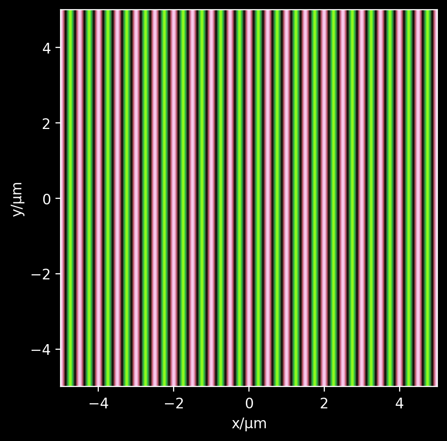

# Fields¶
[1]:
%load_ext autoreload
%autoreload 2
import sys
codebase_dir = '/Users/juan/ZiaLab/Codebase'
sys.path.append(codebase_dir)
import wavesight as ws
import numpy as np
import matplotlib.pyplot as plt
import cmasher as cm
from mpl_toolkits.axes_grid1.axes_divider import make_axes_locatable
%config InlineBackend.figure_format='retina'
## Plane waves¶
[5]:
λFree = 1.00
kFree = 2*np.pi/λFree
nref = 2.000
θk, ϕk = np.pi/2, np.pi/4*0
Eamp = 2.0
Lobs = 10.
numSamples = 500
print('λxy = %.2f' % (λFree/nref / np.sin(θk)))
xCoords = np.linspace(-Lobs/2, Lobs/2, numSamples)
yCoords = np.linspace(-Lobs/2, Lobs/2, numSamples)
η = 0.
Eϕ = 0
Efield, Hfield = ws.plane_wave(kFree, nref, θk, ϕk, η, Eamp, Eϕ, xCoords, yCoords, fields='EH')
extent = [-Lobs/2, Lobs/2, -Lobs/2, Lobs/2]
plt.figure()
plt.imshow(np.real(Efield[1]), extent=extent, origin='lower', cmap=cm.watermelon)
plt.xlabel('x/μm')
plt.ylabel('y/μm')
plt.show()
λxy = 0.50

[ ]: